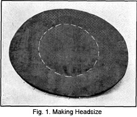
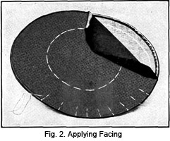
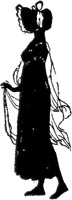

1928—The New-Way Course in Millinery and Hat Design
Lesson 18—Making Different Kinds of Hats—Sailor Hats
Making the Sailor Hat
Until now, you have been taught the various methods of making frames, covering frames, correct trimmings, and all other important phases of construction. Now you are ready to put your knowledge to the test—to make an actual hat.
We will begin with the sailor hat, for if you are able to make a smart, well-fitting, attractive sailor hat you will be able to make any other type. To make the lesson easier and less complicated for the student, we will pretend that the frame is already made, or bought.
When covering the flat sailor shape, several important points of construction must be considered. In the first place, we must examine the shape itself to see that the buckram is not broken, that it is well wired and bound, that the edges are bound with bias crinoline. You remember that the complete method of making the buckram frame is taught in an earlier lesson. Refer back to this lesson if you have any doubts whatever as to how the frame for the sailor shape should be made. If you have a frame ready, but it is slightly broken from handling, the broken places can be shaped as well as possible and given a coat of shellac to keep them firm and strong.
Always remember that if your shape is covered with velvet, the velvet must be so put on that the nap runs from the front towards the back. There are no exceptions to this rule whatever. Unless the velvet is applied in this manner, it will not wear well. The life of the hat is actually cut in half. It is wise, in purchasing velvet for a hat, to choose that type of velvet that does not show finger prints. Otherwise you are likely to have trouble both in the making and in the wearing of the hat.
1. In covering the brim, first find the straight lengthwise thread of the material and place it on the brim with the thread running from front to back. Pin in place.
2. Now find the crosswise thread and pin this to the hat with this thread running crosswise.
3. The four points where you have pinned your material are center front, center back, right and left sides of the hat.
4. Proceed to pin your material to the four points exactly between the points just mentioned. The material should not be stretched, but it must lay perfectly smooth and flat. Stretching the material will very likely draw the buckram shape and spoil the hat.
5. Your material is now correctly pinned in place for the covering of the upper side of the hat brim. Turn the work over so that the velvet is down and proceed to cut, allowing 1/2 inch all around the edge for finish.
6. Turn over the edge and catch-stitch to the binding. Use your thumb for turning it over the edge, being careful that the edge is not stretched. Do not allow the stitches to go through to the face of the velvet as this mars your work and indicates poor workman ship.
7. Your binding may be too narrow. In this case, use a diagonal basting stitch with the needle pointing to the edge of the hat. These stitches should be about 3/8 of an inch apart.
8. With your velvet in place, perfectly flat and smooth, you are ready to mark your headsize through from the buckram shape to the velvet. Use basting for this purpose, running the needle from the right side to the wrong, and then from the wrong side to the right. Allow it to pass straight up and down through both materials.
9. You may find that your velvet does not lay flat at the edge but ruffles the least bit where it is turned over the brim edge to the under side. If so, clip the edge slightly in places just enough to allow the velvet to lay perfectly flat and smooth.
The covering of the flat sailor shape is not difficult, but it demands care and practice. The brim is probably the most difficult part of the work, but once you have mastered it you will never have any trouble no matter what type of brim you may have to cover. Do not leave this part of the lesson until you are positive that your brim is correctly covered. Rather go slowly and do things correctly, than hurry through the course and be forced to refer to the lessons constantly.
Fitting the Facing
The next step in the making of the sailor hat, is the fitting of the facing. This must be very carefully done.
1. First make a paper pattern of your hat. This pattern should be exactly the same shape as the brim, but with one-half inch (or a little more if a flange edge is to be made) allowed on the edge.
2. Be very sure that the grain of the material to be used for the facing is the same as the grain of the material used on the top of the brim.
3. Place the facing on the underside of the brim, pinning it in place with the eight pins exactly as you pinned the upper part in place. All pins should point towards the center of the hat.
4. Be careful not to stretch the outside of the facing.
5. To apply the flange edge, cut a piece of brace wire long enough to go around the edge of the brim, allowing a few extra inches.
6. Place the wire under the edge of the facing and slip the edge of the velvet underneath this wire.
7. Now place a pin under the wire, catching the binding and the underturning of the velvet, and work around the hat in this manner. The pins should be 1 1/2 inches apart. Work from the center of the front to the center of the back both in pinning and in sewing. But the joining of the wire must come exactly at the center back.
8. Hold the brim with the facing toward you. Then thread your needle with thread matching the material being used and bring the needle point up under the wire and through the covering where it is turned over the edge of the hat.
9. Catch it in the turning of the covering with a small back stitch and bring the needle back through the facing.
10. Now take a short stitch on the facing side, very close to the wire, and bring the needle back through to catch the underturning of the covering of the hat.
11. Once again bring the needle back through to the lining side and continue in this way until the center of the back is reached.
12. Do not sew all around the hat. When you reach the center of the back, begin again at the center of the front and work around this side of the facing as you have already sewed the other side.
13. The facing must be sewed down with a lace stitch if no wire is used at the edge. Turn the edge of the facing until it is exactly even with the edge of the hat. When finished it should look like a plain seam coming on the edge.
14. To make the lace stitch, fasten the thread between the folds of the facing and the upper covering of the brim. Take a small stitch under the turning of the covering, and then under the turning of the facing. Take a few of these stitches, and then draw the thread closely. This "laces" the edges together. Your stitches must be very straight and very tiny.
Have you mastered this part of the lesson? Are you quite sure that your work is correctly done, that you can proceed as far as this in the making of a sailor hat without referring to the lessons?
If not, go over the step-by-step directions again, repeat the work, and do not be satisfied until your work is perfect. Rather spend a little more time on the lesson now, and learn to make the sailor hat right, than hurry over it haphazardly and be forced to refer to it constantly.
When you are positive that you have mastered the fitting of the facing, proceed with the next step, which is the adding of a bias overlap to the brim.
Adding Bias Overlap to Sailor Brim
The bias overlap or fold is added before the turned edges of the covering and the lining are joined. While this overlap may or may not be used just as desired, there are hats that seem unfinished without it. Some faces also seem to require a soft finish at the edge of the hat brim.
1. Cut a bias strip two and one-half inches wide.
2. Fold lengthwise through the center.
3. Mark the center of this fold.
4. Match the center of the fold with the center front of the hat so that the seam of the joining comes at the center back. Always remember, in hat making, that no seam of any kind should appear in the front. Joinings should always be at the center back.
5. Place the raw edges of the fold between the hat and the facing, and stretch tightly so that it turns flat to the upper side of the hat.
6. Fasten on to the edge with basting stitches and attach the facing to the hat in exactly the same manner as you would if the over lap were not put on.
7. The overlap may be made as an up-turning or an under-turning lap by stretching so that it either stands up from the edge or droops down from the edge. The position is regulated entirely by the tension used. If the fold is drawn very tightly it will lie flat to the brim, if the tension is not so great it will form an upward or downward turning fold at the edge of the brim.
Covering the Crown
You are now ready to cover the crown of your sailor hat. It may be covered with any of the crown drapes taught in an earlier lesson. You must determine this yourself, in accordance with prevailing style, and with your personal requirements. For a sailor hat you may use a round or a straight crown.
After covering the crown, the crown and brim are joined. The headsize must first be cut in the center of the brim as marked before the facing was applied. Cut this headsize one inch inside the actual headsize measurement in order that enough of the material is allowed to sew to the crown.
Your hat is now ready to be trimmed and lined. You remember you were taught the various types of trimmings. Always bear in mind that the trimming must be appropriate, harmonizing, in good taste and becoming. It must suit the hat, and suit the wearer. The lining is the finishing touch and should be made and applied as previously taught.
Covering Other Hats
As before mentioned, if you are able to make the sailor hat correctly, you should have no trouble in covering any other shapes. If a writer once writes a masterpiece, he need have no hesitancy in attempting to write other stories; but until he has mastered the technique of writing a simple story, he dare not venture to write a complicated romance. It is the same with your work in millinery. If you have mastered the making of the sailor hat, you may feel confident to proceed with the making of other types of hats; but it is a mistake to proceed with your lessons until you are positive that this one is mastered as thoroughly and completely as is possible.
There are a few important points that must be taken into consideration in the making of different types of hats. If the shape is a rolled turban, for instance, you must remember that the concave side of it must be covered, and this covering will have to be pasted on if a smooth covering is to be obtained. To do this, cut a bias piece of the material wide enough to cover the brim. Paste to the brim with milliner's glue.
The charm of a rolled turban rests in its soft smooth covering. This covering should be smooth but have no suggestion of being stretched or pulled.
The covering on the concave side has been pasted on and turned carefully over the edge of the frame. The convex side has its covering simply stretched and finished at the edge and headsize as is the sailor hat brim. Sometimes instead of a plain covering a cross or a lengthwise drape is used just as the taste of the individual dictates. When the turban is braid covered, the braid is often made into wheels or other fancy shapes and these form the covering of the brim.
Exceptions to the Sailor Hat Rule
If you are able to make the sailor hat correctly, you will not have trouble with other types of hats. But there are certain exceptions to the rule—certain types of hats that require different treatment, that are differently developed than the sailor hat.
There is the picture hat, for instance, which is rarely twice the same. Although it is very similar in shape and construction to the sailor hat, it is vastly different in size, use and treatment. Of course, much that you have already learned will be of value to you in your experience with picture hats.
The shapes and sizes of picture hats are wide and varied—but the effect to be achieved is always the same. With the picture hat one must achieve an attractive and picturesque appearance. It may be simply a clever variation of the sailor shape; it may be based on the drooping-brim hat, with just a slightly different line or angle to place it in the picture hat class. But no matter what the shape of it happens to be, the picture hat must serve its purpose of creating a picturesque effect.
As in all other hats, the tilt in the picture hat should be on the right side of the head. The left side may be made wider than the right to give a less monotonous effect. To achieve a splendid composition in a hat of this type, the color of the hat itself should be in decided contrast to the color of the trimmings used. Great care must be taken in every detail of the picture hat, for it draws attention to itself more strongly than other hats and if it is not correct and attractive it will defeat its own purpose.
Picture hats intended for winter wear are usually of panne or chiffon velvet, brocades, satin and taffeta. Tulle, maline, net, lace, chiffon, georgette and taffeta are most popular for the summer picture hat. With the exception of taffeta, picture hats made of the summer materials mentioned are transparent hats and are made on wire foundations. Many of the summer materials are used in the winter, too, but in darker colors. Later we will learn exactly how this type of transparent picture hat is made.
I want to impress upon you that all hats are not made with buckram or wire foundations. Sometimes Fashion decrees that the soft hat be worn, and for this crinoline is usually chosen for the foundation material.
It is well to make a paper pattern of the hat to get a general idea of how it is going to look and then cut out the foundation material. If crinoline is used, it may be handled in much the same way as buckram. It will have to be slashed, if the hat is to be turned up or down, or if a molded frame is desired, it can be made over a wire mold, as mentioned in an earlier lesson.
The molding of a frame is not easy for the beginner and it is often found more satisfactory to purchase the frame ready made and cover it to suit the taste. Of course, it is well to know the different ways of making shapes for sometimes it is entirely impossible to purchase just the type of shape desired.
As we all know, Fashion is fickle and a shape that was so popular last year is entirely a thing of the past today. However, some day—perhaps a few years from now—the same shape, slightly changed in one way or another, will come back into prominence and then fade away, as before.
Let us remember that often a hat made of buckram can be copied in a light-weight material and be very attractive. Do not be afraid to try any type of hat. It is only through experience that we gain confidence.